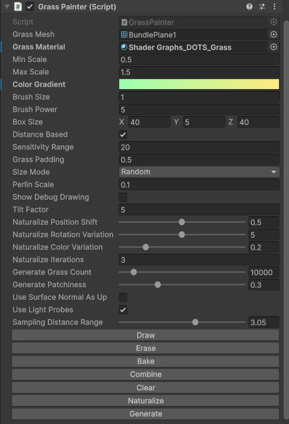
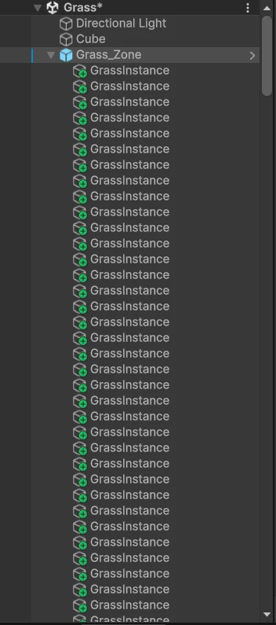
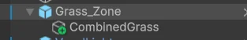
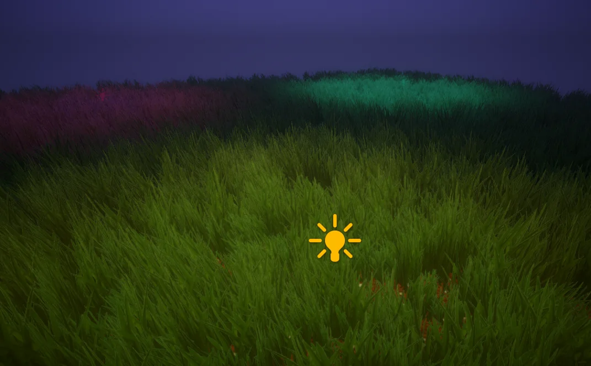

At Highstreet we needed grass. Lots of it, in VR, running on hardware that doesn't forgive you much. I needed something really cheap, so I made my own. It's not fancy. It's a painter tool that places grass in the editor, a step that combines all of it into one mesh, a simple trick so the grass only turns on when you're close, and a cheap unlit shader that does the rest.
Painting the grass
The painter is an editor script. You give it a grass mesh, a material, a min and max scale and a colour gradient, then hit Draw and paint in the scene view like a brush. Every drag fires a ray from the mouse into the scene. If it hits something inside the painter's box, the brush drops a few blades at random spots inside the brush circle. Brush Power is how many it tries per stroke. Before placing one, it checks the distance to every blade already there and skips it if it's closer than the padding, so you don't get piles of grass in one spot.
// on mouse drag in the scene view
if (Physics.Raycast(mouseRay, out hit) && InsideBox(hit.point))
{
for (int i = 0; i < brushPower; i++)
{
Vector3 pos = hit.point + RandomInCircle(brushSize);
if (!InsideBox(pos) || TooCloseToExisting(pos, padding)) continue;
float scale = sizeMode == Perlin
? Lerp(minScale, maxScale, PerlinNoise(pos.x * perlinScale, pos.z * perlinScale))
: Random.Range(minScale, maxScale);
Color color = gradient.Evaluate(InverseLerp(minScale, maxScale, scale));
if (useLightProbes) color *= SampleProbesAround(pos);
SpawnBlade(pos, randomYaw, smallTilt, scale, color); // colour goes into vertex colours
}
}Each blade gets a random spin, a small random tilt and a scale. The scale is either plain random or comes from Perlin noise, so you get areas of taller and shorter grass instead of noise everywhere. The colour comes from the gradient based on that scale, so tall and short grass are slightly different shades. Holding Ctrl while drawing erases, and Ctrl+Z pulls back the last few blades.
There's also a Generate button for when you don't want to paint by hand. It fills the whole box with random points, drops a ray down from above each one to find the ground, and places a blade there. Patchiness is just the chance that a point gets skipped, so turning it up gives you bare spots. Naturalize is for cleaning up the look after: it nudges every blade a bit, re-snaps it to the ground with a ray, re-tilts it and shifts its colour a little, and it can run a few passes. It's cheap, but it takes away that obviously placed look.

Baking light into the grass
This part is easy to miss. When light probes are on, the painter samples the lighting for every blade while you paint. For each vertex of the blade it picks a random point nearby (kept above the ground), reads the light probe there, and averages all of it. That colour gets multiplied into the blade's vertex colour. So the grass already carries the scene's baked light before the shader even runs, and it costs nothing at runtime.
Color SampleProbesAround(Transform blade)
{
Color sum = black; int count = 0;
foreach (Vector3 v in grassMesh.vertices)
{
Vector3 p = blade.TransformPoint(v) + RandomInSphere(samplingDistance);
p.y = abovePoint; // keep the offset upwards
LightProbes.GetInterpolatedProbe(p, null, out var sh);
Color c = sh.Evaluate(Vector3.up); // light coming from above
if (c != black) { sum += c; count++; }
}
return count > 0 ? sum / count : white;
}Combining it all
Painting makes a separate object for every blade. That's fine while you're working, but it's terrible for a game. Thousands of objects means thousands of draw calls.


So Combine takes every blade, with its position, rotation and scale, and merges them into one mesh with the vertex colours kept. If there's already a combined mesh, it gets merged in too, so you can paint more later and combine again. Bake does the same thing from scratch, also optimises the mesh, and sets the renderer up the cheap way: light probes for GI, no shadow casting, no shadow receiving. After that, the whole patch is one object and one material.
var parts = new List<CombineInstance>();
if (combinedGrass != null) parts.Add(combinedGrass.mesh); // keep what was combined before
foreach (var blade in grassInstances)
parts.Add(new CombineInstance { mesh = blade.mesh, transform = blade.localToWorldMatrix });
Mesh combined = new Mesh();
combined.CombineMeshes(parts.ToArray(), mergeSubMeshes: true, useMatrices: true);
combined.colors = allBladeColors; // baked tint + probe light per blade
DestroyAll(grassInstances); // one object leftOnly on when you're near
Even one mesh per patch is a waste if you're nowhere near it. Each painter has its box, and around it a bigger box that's the box size plus the sensitivity range on every side. Each update it checks whether the camera is inside that bigger box and just turns the combined grass on or off. No fading, nothing smart. You just don't pay for grass you can't see properly anyway.
void Update()
{
Vector3 cam = transform.InverseTransformPoint(Camera.main.transform.position);
Vector3 zone = boxSize + Vector3.one * (2f * sensitivityRange);
bool near = Mathf.Abs(cam.x) <= zone.x / 2
&& Mathf.Abs(cam.y) <= zone.y / 2
&& Mathf.Abs(cam.z) <= zone.z / 2;
combinedGrass.SetActive(near);
}The shader
The shader is unlit. The colour is the baked vertex colour times the grass texture, darker at the root and full at the tip, all multiplied by light from my voxel map (more on that below). In the vertex stage, the tip of each blade moves and the root stays put, because every offset is scaled by the blade's UV height. The wind comes from a pattern texture scrolled across the world with time. Its red and green channels push the blade along X and Z, so nearby blades move together in waves instead of each one doing its own thing. There's also a bend that depends on the distance to the camera: within the bend range, the tip is pushed along the blade's normal instead of by the wind.
// vertex
float h = uv.y; // 0 at the root, 1 at the tip
float2 wuv = (worldPos.xz + time * windSpeed) * windPatternScale;
float3 wind = float3(windTex.SampleLOD(wuv).r, 0, windTex.SampleLOD(wuv).g) * windStrength;
float near = min(dot(viewVec, viewVec) * bendRange, 1); // squared distance to the camera
float3 tip = lerp(normalWS * h, wind * h, near); // close: bend, far: wind
worldPos += tip + float3(0, grassHeight * h, 0);Alpha clip, not alpha blend
The grass uses alpha clip. Pixels below the clip value just get thrown away, and what's left is written to depth like any opaque object. That means the draw order sorts itself out through the depth buffer. I tried alpha blending, and it does give nice soft edges, but the draw order gets really wacky. Blades in front draw behind blades in the back, and it changes as you move your head. With one combined mesh you can't sort the blades either. So, clip.
// fragment
float4 tex = mainTex.Sample(grassUV);
float alpha = tex.a * saturate(h * 10); // also fades the very root
clip(alpha - clipThreshold); // opaque + depth write, no sorting neededThe problem is that alpha clip comes with jagged edges. Every blade edge is a hard cut, and in VR that looks horrible. The fix I went with is 4x MSAA. MSAA works on geometry edges, and with alpha clip on top it cleans the blade edges up a lot. It's not the smoothest solve. Far away, where the blades are thinner than a pixel, it still shimmers. But up close it looks fine, and it's way cheaper than the alternatives.
Lighting from the voxel map
The last piece is light. I'd already built a voxel light baker for Highstreet that bakes the scene lighting into a 3D texture, a kind of 3D lightmap. The grass shader reads it. It passes the world position of each pixel into a small custom function that samples that voxel map, and the result tints the grass. So if a patch sits in a pink-lit area or under a teal light, the grass picks that up, without any real-time lights.
// voxel light lookup (custom function in the graph)
float3 SampleEnvironmentVoxelMap(float3 worldPos)
{
float3 uvw = (worldPos - volumeMin) / volumeSize; // world -> 0..1 inside the baked volume
return voxelLightTex.Sample(linearSampler, uvw).rgb;
}
float3 light = SampleEnvironmentVoxelMap(worldPos);
float3 color = light * (light * 0.02 + vertexColor * h * tex.rgb);
Where it started
The early version was a lot rougher. It was very bright and yellow and pretty uniform, more like a carpet than a field. It did prove the idea in VR though.
That's it really. Nothing here is new tech. It's a bunch of cheap tricks stacked together: paint in the editor, merge into one mesh, switch it off when you're far, bake the light in, and clip instead of blend. The jaggies and the shimmer in the distance are the price, and for VR on a budget I think it was worth paying.